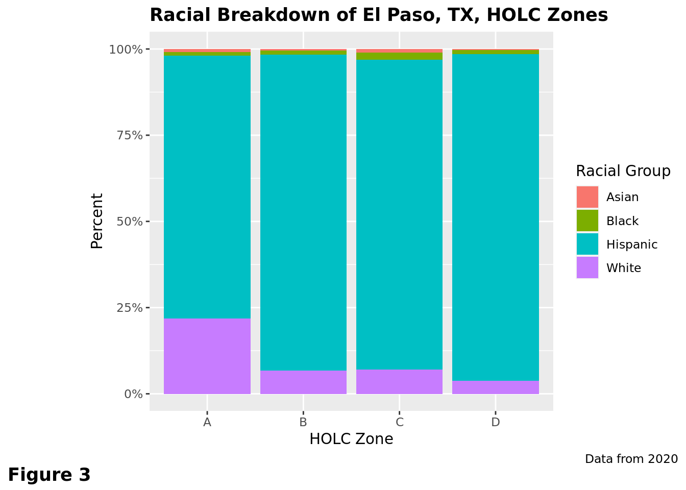

The Power of Investment: The Spatial Variation of Racially Discriminatory Redlining Throughout the United States
Report
Introduction and Data
It has long been established that redlining, the practice of classifying neighborhoods as hazardous to investment, primarily targets neighborhoods that predominantly have nonwhite residents (Aaronson et al. 2021). Given the role that historic redlining has played in shaping modern day urban America, its socioeconomic impacts have frequently been studied (Appel 2016). However, redlining was heterogeneously distributed across various regions of the United States, thus creating a regional disparity in social mobility (Xu 2023). These hazard zones, created by the Home Owner’s Loan Corporation (HOLC) are classified with the alphabetical letters A, B, C, and D, with increasing levels of risk. Zones assigned A and B are considered less risky to invest in than zones C and D.
To further pursue this inquiry, this study seeks to identify drivers of differences in the prevalence of redlining. Do the proportions of nonwhite residents living in formerly low-ranked (levels C and D) HOLC zones differ regionally across the United States? To explore an alternative driver of racial disparity across HOLC zone, we inquire, do the proportions of nonwhite residents living in formerly low-ranked HOLC zones differ based on the size of the metropolitan area as a whole? In other words, was redlining more pronounced in large metropolises compared to mid-sized cities? Our final line of inquiry pertains to the geographic distribution of ethnic groups within a metropolitan area. Is there a significant difference in the racial composition of a neighborhood encompassed by a low ranked HOLC zone compared to directly adjacent neighborhoods? This question assesses whether redlined areas were racially targeted on a microgeographic scale as opposed to merely reflecting larger demographic trends across the metropolitan statistical area (MSA) as a whole.
These investigations can be summed up the following research question: How does region, metropolitan area size and geographic distribution of racial groups within a metropolitan area impact racial diversity in formerly redlined neighborhoods?
In the 1930s, America was in the midst of the Great Depression. In an attempt to jumpstart the private sector and reduce unemployment, the Roosevelt administration implemented the New Deal, a suite of public works projects and financial incentives. A part of the New Deal package was the National Housing Act of 1934, with established the Federal Housing Administration (FHA) (Light 2010a). The FHA was designed to write loans to promote homeownership. To establish criteria to decide on which applicants would receive loans, the FHA asked the HOLC to create maps to determine the area which was the most desirable to loan to (Michney 2021). Most predominantly nonwhite neighborhoods were placed in zones C and D, making it difficult for residents in these zones to secure loans (Fishback et al. 2020). The HOLC maps were a major factor in whether families were able to achieve homeownership during the early 20th century, when suburban development made homeownership more attainable for a larger percentage of Americans (Logan et al. 2023). This is significant because homeownership is a generational source of wealth that can be passed on to descendants (Light 2010b). As a result, the demographic composition of neighborhoods classified by the HOLC has changed little since the maps were first created 90 years ago (An, Orlando, and Rodnyansky 2019).
We hypothesize that cities along the West Coast and in the Midwestern United States have a higher proportion of nonwhite residents living in HOLC zones C and D than cities on the East Coast. This hypothesis is due to the concurrent development of these cities with the implementation of the redlining policies, whereas East Coast had already been developed before redlining was implemented (Xu 2023). We also hypothesize that larger cities will see greater racial disparities across HOLC zones. This is based on findings indicating a positive relationship between wage inequality and city size (Baum-Snow and Pavan 2013). Our final hypothesis is that there will be a significant difference in ethnic composition between neighborhoods encompassed by zones C and D and directly adjacent neighborhoods. The premise of this assumption is evidence of structural racism in the real estate industry that influenced the creation of the HOLC maps (Wassmer 2023).
Given the unethical nature of discriminatory lending practices, it is important to consider the ethical considerations of working with this data. The data about race and ethnicity comes from the US Census in 2020. Research has shown that non-response bias and undercounting is higher among racial and ethnic minorities (Lor et al. 2017). Therefore, this may have resulted in an undercount of ethnic minorities in the redlined communities in the data set we are using. Additionally, using ‘redlined neighborhoods’ as a level of analysis risks cementing racial segregation in the HOLC zones as an analytic paradigm. However, we believe that these concerns can be mitigated by placing the data analysis within the appropriate historical context.
Our motivation in doing this research was to try to understand the sources and spatial extent of inequality. We felt that redlining was a topic that encompassed our diverse interests of geography, politics, urban planning and health equity. We hope to understand how redlining impacts these fields today.
The data was compiled by the statistics and news website FiveThirtyEight. The data can be downloaded off the FiveThirtyEight website (2022). FiveThirtyEight has also created a GitHub repository for the data which includes a description of the variables. The data about the redlining zones was taken from the Mapping Inequality Project, which collected the data by analyzing the Home Owner’s Loan Corporation (HOLC) maps produced between 1935 and 1940. The data of race and ethnicity was taken from the 2020 U.S. Census. The modern-day census data was matched to the historic HOLC zones by determining which blocks overlapped with HOLC zones and calculating the percentage of the block’s area that intersected with the HOLC zone. The proportion of the block intersecting with the HOLC zone was used to weigh each block’s demographic data when summing the estimated 2020 population of the historic HOLC zones. The dataset contains 28 unique columns and 551 observations. Most of the columns give the number of residents belonging to each racial group within a HOLC zone. There are also columns indicating the total population of the HOLC zone, percentage of each racial group in a HOLC zone and the populations and percentages of ethnic groups across an entire metropolitan area’s HOLC zones. These observations are quantitative, including both raw numbers and percentages. There is also a column representing HOLC zone, which is categorical with the categories being the four HOLC zones. The HOLC zone levels are ordinal. Additionally, we modified the data set to create news variables for region, which groups metropolitan areas by their region to test variations across regions and difference in white population, which quantifies the difference in proportion of white residents in between an HOLC zone ranked C and D and the directly adjacent zone (regardless of zone quality). We chose to define regions based on the United States Census Bureau classification of the United States into four regions: Northeast, Midwest, South and West.
Literature
The article “The long-run effects of the 1930s HOLC ‘redlining’ maps on place-based measures of economic opportunity and socioeconomic success” compares HOLC loan zones with socioeconomic opportunity metrics decades after the policy was implemented. The researchers establish a causal relationship between access to HOLC credit given on location and economic prosperity based on data from the Opportunity Atlas. The researchers also look at the difference in economic opportunity between families that are right along the border of HOLC zones. The results show a statistically significant difference in economic mobility between HOLC zones. They also find more teenage mothers, incarceration, and poverty in lower HOLC zones. Another finding is that modern credit scores are closely related to historic HOLC zones. The authors focus on economic differences between HOLC zones while our research questions look explicitly at racial differences. While this article qualitatively mentions racial disparities, it does not include racial disparities in the statistical analysis.
Methodology
Exploratory Data Analysis
Here we calculate the proportion of racial groups in the lowest HOLC zones by state. In doing so, we can compare population percentages by race across regions to see which region had the greatest amount of redlining. In other words, this graph shows which states have the highest number of non-white residents clustered in low HOLC zones (zones C and D). States in the deep South and urban Northeast have the greatest percentage of non-white residents in low HOLC zones. We chose to use a map of the United States in order to visualize the population of non-white people across the whole nation. By doing this we can get a snapshot of the entire country and visualize how zones C and D compare across states.
To investigate the general racial trends of redlining across the United States, we created a visualization that displays the proportion of the population that is non-white in each of the HOLC Grades and faceted by the major regions of the United States (composed of the Midwest, Northeast, South, and West). Each region follows a similar trend in which there is a clear inverse correlation between the quality of HOLC grade (A being the highest, D being the lowest) and the percent of non-white people in the population. The percentage of non-white people in the population increases as the quality of the zone decreases, with the highest proportion of nonwhite people in D zones and the lowest in A zones. In all of the regions, grade A zones have a median non-white population of about 25%, grade B zone medians hover around 37.5%, grade C zone medians are less regular across the regions but are still in line with the general trend, and grade D zone medians are all above a 50% non-white population, following the general trend.
We opted to use a box plot for this visualization because we are working with a categorical variable and a quantitative variable. Using a boxplot also allowed us to facet by region with the result being easily visually interpreted.

This figure focuses on El Paso, Texas, the city with the greatest proportion of non-white residents (96.23%) in zone D of the metropolitan areas represented in the data set across HOLC zones. In this visualization, we can see that the trend of inverse relationship between white population and quality of HOLC zone is still followed for the most part when in areas where white people do not compose the majority of the population. This piece of data also demonstrates that redlining is not simply the segregation of Black and white people. This figure demonstrates that in El Paso, the population is overwhelmingly Hispanic with both Asian people and Black people making up very small (less than 5%) of the population. This graph can be compared with the Durham-Chapel Hill racial breakdown in Figure 4.
We chose to use a relative frequency bar graph for this figure because we are comparing different demographic breakdowns across a qualitative variable. By using this visualization it is easy to see what proportion of each zone each race makes up within El Paso.
This figure visualizes the racial population of Durham-Chapel Hill, North Carolina. There is an adherence to the trend of a larger proportional population of white people in areas with higher HOLC grade. This demonstrates that even in areas with more variation in racial makeup, there is still a clear presence of the correlation between lower HOLC grade and a higher percent non-white population. In zone A, white people make up over 75% of the population. In zone B it’s about 65% white; zone C is about 40% white; zone D is about 16% white. As the quality of zone decreases, there is an increase in percent of both Hispanic and Black residents. The percent of Asian residents in the population remains low across all zones and remains constant at less than 5% of the population, with a slightly larger population in zone C.
Forward Model Selection
We chose to pursue two pathways of forward-model selection, one logistic and one linear, to compare alternative ways of our answering our research question. In the linear models, the percentage of non-white residents in zones C and D was the response variable. This served as a measure of modern day segregation in formerly redlined areas. In the logistic models, the zone quality, which was grouped into ‘high’ (zones A and B) and ‘low’ (zones C and D) zones, was the response variables. While this response still measured racial segregation, it did so in a different way by looking across all four zones as opposed to focusing on the lower-ranked zones. This dual approach allowed us to identify demographic nuances when measuring specific aspects of the data. Despite these methodological differences, both models ended up choosing the same explanatory variables as the most useful.
| Model | Type | Adjusted_R_squared | AIC |
|---|---|---|---|
| pct_non_white ~ Region | linear | 0.1714115 | 2400.8007 |
| pct_non_white ~ total_pop | linear | 0.0139161 | 2446.6776 |
| pct_non_white ~ diff_white | linear | 0.2937572 | 2354.8875 |
| pct_non_white ~ Region + total_pop | linear | 0.1889455 | 2395.9022 |
| pct_non_white ~ Region + diff_white | linear | 0.5364609 | 2242.0550 |
| pct_non_white ~ Region + total_pop + diff_white | linear | 0.5618719 | 2227.5302 |
| pct_non_white ~ Region * total_pop | linear | 0.1943808 | 2396.9804 |
| pct_non_white ~ Region * diff_white | linear | 0.5374640 | 2244.3866 |
| pct_non_white ~ Region * total_pop * diff_white | linear | 0.5676837 | 2233.4401 |
| zone_quality ~ Region | logistic | NA | 771.8395 |
| zone_quality ~ total_pop | logistic | NA | 757.2036 |
| zone_quality ~ diff_white | logistic | NA | 483.7540 |
| zone_quality ~ Region + total_pop | logistic | NA | 762.7710 |
| zone_quality ~ Region + diff_white | logistic | NA | 457.6146 |
| zone_quality ~ Region + total_pop + diff_white | logistic | NA | 457.3024 |
| zone_quality ~ Region * total_pop | logistic | NA | 753.2842 |
| zone_quality ~ Region * diff_white | logistic | NA | 457.3230 |
| zone_quality ~ Region * total_pop * diff_white | logistic | NA | 465.9727 |
# A tibble: 6 × 5
term estimate std.error statistic p.value
<chr> <dbl> <dbl> <dbl> <dbl>
1 (Intercept) 33.8 1.55 21.8 2.27e-61
2 RegionNortheast 0.535 2.34 0.228 8.20e- 1
3 RegionSouth 22.3 2.01 11.1 8.31e-24
4 RegionWest 20.2 2.89 7.01 1.94e-11
5 total_pop 0.00000867 0.00000212 4.08 5.90e- 5
6 diff_white 1.13 0.0744 15.2 4.61e-38# A tibble: 6 × 5
term estimate std.error statistic p.value
<chr> <dbl> <dbl> <dbl> <dbl>
1 (Intercept) -0.279 0.182 -1.54 1.25e- 1
2 RegionNortheast -0.895 0.321 -2.79 5.24e- 3
3 RegionSouth 0.883 0.308 2.87 4.16e- 3
4 RegionWest 1.18 0.408 2.88 3.92e- 3
5 total_pop 0.000000658 0.000000530 1.24 2.15e- 1
6 diff_white 0.144 0.0125 11.5 9.23e-31After conducting forward selection for both linear and logistic regressions, the additive linear models with the explanatory variables of ‘Region’, ‘total_pop’, and ‘diff_white’ were the best fit. This seen by the lowest AIC values out of all the models, indicating that these models do the best job at explaining variability in the response variables.
Our model selection was AIC-based, preferring the linear and logistic models where the AIC value denoted a better fit (rather than the adjusted R squared value for in the linear models). For linear model selection, the adjusted r squared and AIC values were predominantly complementary as complexity increased, though conflicted across equivalent additive and interactive 3-variable multiple linear regressions. We erred on the side of consistency and prioritized the improved AIC value over the slight dissonance where the selected linear model has a lower adjusted r squared value than an alternative model.
Results
Hypothesis Testing
We decided to conduct a hypothesis test because it could provide an answer to whether there is a difference in racially composition between the high-ranked and low-ranked HOLC zones. Our null hypothesis is that the true proportion of white residents in high-ranked HOLC zones is equal to the true proportion of white residents in low-ranked HOLC zones. Our alternative hypothesis is that the true proportion of white residents in high-ranked HOLC zones is not equal to the true proportion of white residents in low-ranked HOLC zones. We set our significance level \(\alpha\) at 0.05. Bootstrapping sampling was used to make the bootstrap sample distribution to compare against our sample mean proportion. This simulation based technique gives us more flexibility than a theory based approach. We used hypothesis testing as opposed to confidence intervals because we are determining whether a hypothesis about a particular population proportion is true instead of whether it appears in a range of data, which is the purpose of a confidence interval.
# A tibble: 1 × 1
p_value
<dbl>
1 0# A tibble: 2 × 2
holc_grade mean
<chr> <dbl>
1 C 48.7
2 D 39.4# A tibble: 2 × 2
holc_grade mean
<chr> <dbl>
1 C 54.7
2 D 54.8\[ H_0: \pi_{surrounding} - \pi_{inzone} = 0 \]
\[ H_A: \pi_{surrounding} - \pi_{inzone} \neq 0 \]
\[ {Average~Percent~White~in~a~C~or~D~HOLC~Zone} = \frac{(48.65131 + 39.39420)}{2} = 44.022755 \]
\[ {Average~Percent~White~in~Surrounding~Areas} = \frac{(54.67263 + 54.80659)}{2} = 54.73961 \]
\[ \widehat{p}_{surrounding} - \widehat{p}_{inzone} = 54.73961 - 44.022755 = 10.716855% \]
Dicussion
Our multi-dimensional analysis of the legacy of redlining provides strong evidence of the relationship between racism and redlining. City-level investigations of current demographic trends and historic metropolitan zoning present a clear and consistent story of the modern-day consequences of redlining. We find that the impact of redlining on segregation is greater in neighborhoods directly surrounded by majority white communities.
This conclusion is based on our analysis of the role that HOLC zones played on smaller spatial scales. Essentially, we wanted to see if there was a significant difference in the white population in low-graded HOLC zones (C and D) and the directly adjacent neighborhoods that were not impacted by redlining. The linear model produced a p-value of \(4.61 \times 10^{-38}\) and the logistic model gave a p-value of \(9.23 \times 10^{-31}\) which signifies that it is extremely unlikely this result would occur by chance. This finding that there is a significant difference in the white population between directly adjacent redlined vs non-redlined neighborhoods in 2020 demonstrates that racial segregation occurs at small scales, making it more difficult to detect when filtering at larger levels of analysis.
We conducted a hypothesis test to further solidify this relationship. The hypothesis test returned a p-value of 0, which is unrealistic but nevertheless indicates our observation was well below the \(\alpha = 0.05\) significance level. We rejected the null hypothesis that the percentage of white people in redlined and non-redlined neighborhoods would be the same. Our hypothesis test demonstrates that there is an infinitesimally small chance of us making a Type I error, given how far away our sample statistic (\(H_A\)) is from the distribution of sample proportions given that the null hypothesis is true.
This result is meaningful because it indicates that the HOLC mappers were precise when delineating which zones would be redlined. As seen in many maps, small pockets of wealthy areas that have large minority populations were placed in zone D despite bearing a striking resemblance in all other ways to homes just a few blocks away in zone A. Our results confirm these qualitative observations that redlining was surgically precise when targeting minority communities. This ‘checkerboard’ pattern of disparity risks washing out pockets of inequality when conducting research using larger levels of analysis. This is called the ecological fallacy, where smaller communities are aggregated into larger units, distorting inferences made from the analysis (Banzhaf, Ma, and Timmins 2019). Essentially, small, spatial-explicit clusters of non-white residents exist in the middle of a predominantly white area, something that is difficult to measure a zip code or municipal level. Our results identify this phenomenon in redlining, indicating that smaller units of analysis should be used for municipal policy analysis.
While our initial exploratory data analysis indicated that there might be more racial segregation by HOLC zone in the South and Northeast, these results demonstrate that the distribution is much more complex. This outcome may also be a result of the way we divided the United States into four regions. The four broad regions of Northeast, Southeast, Midwest, and West are extremely arbitrary and exhibit high levels of internal heterogeneity which may impact the outcome.
Another potential limitation is that we combined zones A and B into high-ranked zones and zones C and D into low-ranked zones to make the outcome binary for logistic regression. However, this eliminates nuance between the four zones, glossing over differences in racial composition between zones A and B, for example. Testing these more precise differences would bring greater clarity to the racial disparities in redlining.
It is important not to exceed the scope of inference for the results we have found. In particular, when we assess the difference in white populations between low-grade HOLC zones and the directly adjacent neighborhood, we do not know the grade level of the adjacent neighborhood. While we assume these neighborhoods have high grades due to their high white populations, there is no way of knowing this given the lack of data. In reality, the zone gradient in this comparison may vary greatly based on MSA. In the future, we would like to test this relationship more rigorously.
Bibliography
2022. GitHub. FiveThirtyEight. https://github.com/fivethirtyeight/data/tree/master/redlining.
Aaronson, Daniel, Jacob Faber, Daniel Hartley, Bhashkar Mazumder, and Patrick Sharkey. 2021. “The Long-Run Effects of the 1930s HOLC “Redlining” Maps on Place-Based Measures of Economic Opportunity and Socioeconomic Success.” Regional Science and Urban Economics 86 (January): 103622. https://doi.org/10.1016/j.regsciurbeco.2020.103622.
An, Brian, Anthony W. Orlando, and Seva Rodnyansky. 2019. “The Physical Legacy of Racism: How Redlining Cemented the Modern Built Environment.” SSRN Electronic Journal. https://doi.org/10.2139/ssrn.3500612.
Appel, Ian. 2016. “Pockets of Poverty: The Long-Term Effects of Redlining.” SSRN Electronic Journal. https://doi.org/10.2139/ssrn.2852856.
Banzhaf, Spencer, Lala Ma, and Christopher Timmins. 2019. “Environmental Justice: The Economics of Race, Place, and Pollution.” Journal of Economic Perspectives 33 (1): 185–208. https://doi.org/10.1257/jep.33.1.185.
Baum-Snow, Nathaniel, and Ronni Pavan. 2013. “Inequality and City Size.” The Review of Economics and Statistics 95 (5): 1535–48. https://doi.org/10.1162/rest_a_00328.
Fishback, Price, Jessica LaVoice, Allison Shertzer, and Randall Walsh. 2020. “The HOLC Maps: How Race and Poverty Influenced Real Estate Professionals’ Evaluation of Lending Risk in the 1930s.” https://doi.org/10.3386/w28146.
Light, Jennifer S. 2010a. “Nationality and Neighborhood Risk at the Origins of FHA Underwriting.” Journal of Urban History 36 (5): 634–71. https://doi.org/10.1177/0096144210365677.
———. 2010b. “Nationality and Neighborhood Risk at the Origins of FHA Underwriting.” Journal of Urban History 36 (5): 634–71. https://doi.org/10.1177/0096144210365677.
Logan, John R., Samuel Kye, H. Jacob Carlson, Elisabeta Minca, and Daniel Schleith. 2023. “The Role of Suburbanization in Metropolitan Segregation After 1940.” Demography 60 (1): 281–301. https://doi.org/10.1215/00703370-10430012.
Lor, Maichou, Barbara J. Bowers, Anna Krupp, and Nora Jacobson. 2017. “Tailored Explanation: A Strategy to Minimize Nonresponse in Demographic Items Among Low-Income Racial and Ethnic Minorities.” Survey Practice 10 (3): 1–11. https://doi.org/10.29115/sp-2017-0015.
Michney, Todd M. 2021. “How the City Survey’s Redlining Maps Were Made: A Closer Look at HOLC’s Mortgagee Rehabilitation Division.” Journal of Planning History 21 (4): 316–44. https://doi.org/10.1177/15385132211013361.
Wassmer, Robert W. 2023. “Past Structural Racism and Present Home Prices.” Journal of Urban Affairs, January, 1–24. https://doi.org/10.1080/07352166.2022.2147077.
Xu, Wenfei. 2023. “Where Did Redlining Matter? Regional Heterogeneity and the Uneven Distribution of Advantage.” Annals of the American Association of Geographers 113 (8): 1939–59. https://doi.org/10.1080/24694452.2023.2205514.